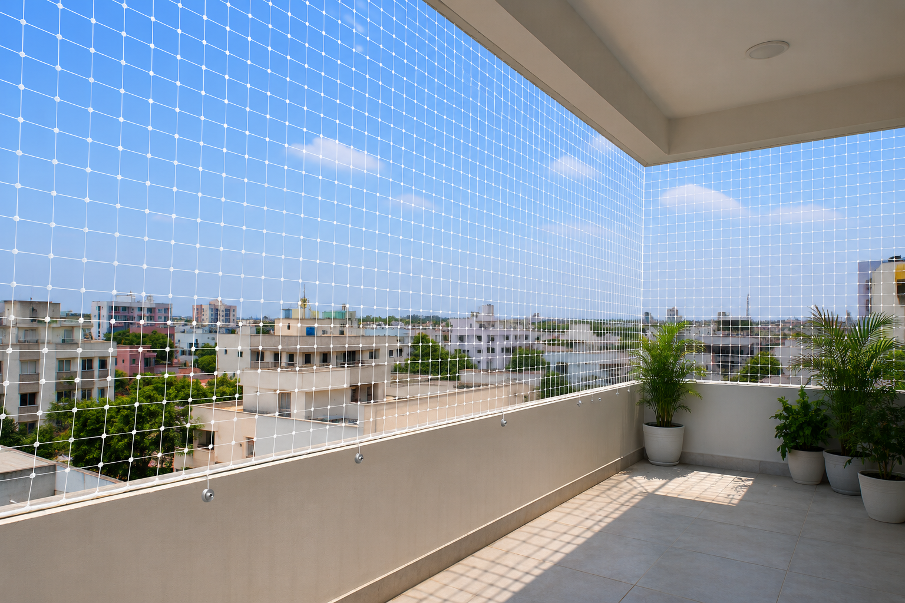
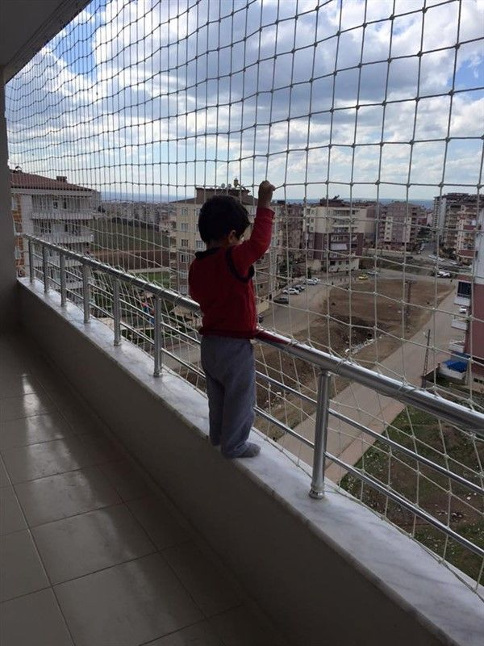
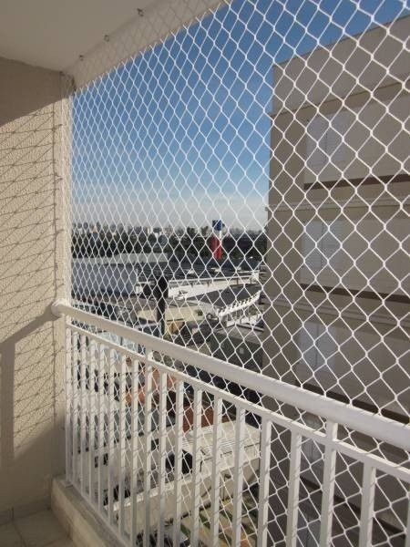
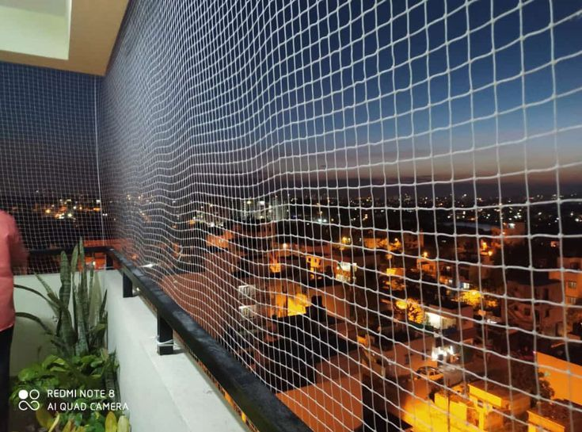
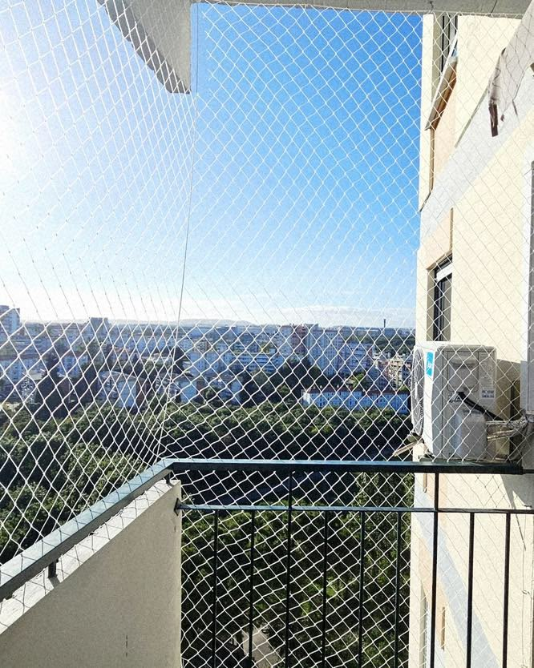

Kenny Safety Nets provides professional Terrace Safety Net installation in Jayanagar using premium UV-resistant safety nets. Protect children, pets and families from accidental falls while enjoying fresh air, open views and complete peace of mind on your terrace or rooftop.
Years Experience

Years of Professional Experience
Kenny Safety Nets provides premium Terrace Safety Net installation services across Jayanagar using high-quality UV-resistant HDPE safety nets. Our professionally installed terrace safety nets help protect children, pets and family members from accidental falls while allowing fresh air, natural light and unobstructed outdoor views. We deliver durable, secure and customized safety solutions for residential and commercial properties.
Kenny Safety Nets installs premium UV-resistant Terrace Safety Nets designed to protect children, pets and families from accidental falls. Our heavy-duty terrace safety nets provide reliable protection for homes, apartments, villas, schools, hospitals and commercial buildings while maintaining fresh airflow, natural light and unobstructed terrace views.
Protect children from accidental falls while allowing them to safely enjoy open terrace spaces with complete peace of mind.
Keep dogs, cats and other pets safe by preventing accidental falls from terraces, rooftops and elevated open areas.
Manufactured using premium UV-stabilized HDPE material for excellent durability under harsh sunlight and continuous outdoor exposure.
Built to withstand rain, heat, wind and changing weather conditions for dependable year-round protection.
High-strength terrace safety nets provide maximum safety without blocking natural ventilation, sunlight or scenic outdoor views.
Installed by experienced technicians using secure fixing methods for long-lasting durability and dependable safety.
Kenny Safety Nets provides professional Terrace Safety Net installation across homes, apartments, villas, schools, hospitals, offices and commercial properties throughout Jayanagar. Our premium heavy-duty terrace safety nets help protect children, pets and families from accidental falls while maintaining fresh air, natural light and open views.

Secure apartment terraces and rooftop spaces with professionally installed Terrace Safety Nets for the safety of children, pets and residents.
Call Now
Protect private terraces and rooftops with premium Terrace Safety Nets that help prevent accidental falls while preserving open views.
Call Now
Improve rooftop safety for office buildings, shopping malls, hotels and commercial properties with durable Terrace Safety Nets.
Call Now
Enhance rooftop and terrace safety in hospitals with heavy-duty safety nets that provide reliable fall protection for staff and visitors.
Call Now
Protect rooftop activity areas, terraces and open spaces in schools and colleges with premium Terrace Safety Nets.
Call Now
Secure factory rooftops, warehouse terraces and industrial buildings with high-strength Terrace Safety Nets for enhanced workplace safety.
Call NowFrom your first inquiry to the final quality inspection, our experienced team ensures a smooth, reliable and professional Terrace Safety Net installation that helps protect children, pets and families from accidental falls while ensuring maximum safety and durability.
Call or WhatsApp us to schedule a FREE site inspection at your preferred time anywhere in Jayanagar.
Our experts inspect your terrace, rooftop and open areas to recommend the most suitable Terrace Safety Net solution for your property.
We take precise measurements and recommend the ideal heavy-duty UV-resistant Terrace Safety Nets for maximum safety and long-lasting performance.
Our experienced technicians install premium Terrace Safety Nets using secure fixing methods to ensure maximum strength and durability.
Every installation is thoroughly inspected to ensure proper fitting, reliable protection and complete customer satisfaction.
Enjoy complete peace of mind knowing your terrace, rooftop or open area is protected with premium Terrace Safety Nets designed for long-term safety.
Explore some of our recently completed Terrace Safety Net installation projects across Jayanagar. We provide premium terrace safety solutions for apartments, villas, schools, hospitals, commercial buildings and industrial properties, helping protect children, pets and families from accidental falls while maintaining safety and open views.

Premium Terrace Safety Nets installed on apartment rooftops to provide reliable fall protection for children and residents.
Call Now
Heavy-duty Terrace Safety Nets installed for villas to secure rooftop areas while preserving ventilation and beautiful outdoor views.
Call Now
Professionally installed Terrace Safety Nets for schools to protect rooftop activity areas and ensure student safety.
Call Now
Premium Terrace Safety Nets installed for hospital terraces and rooftops to improve safety for staff, visitors and maintenance teams.
Call Now
Custom Terrace Safety Nets installed for an independent house to protect children and pets using the rooftop safely.
Call Now
Professionally installed Terrace Safety Nets providing long-lasting rooftop protection for residential and commercial properties across Jayanagar.
Call NowRead genuine reviews from homeowners, apartment residents, villa owners, schools and commercial property owners across Jayanagar who trusted Kenny Safety Nets for premium Terrace Safety Net installation. Our heavy-duty terrace safety nets provide reliable fall protection for children, pets and families while maintaining the beauty and openness of every terrace.
5000+ Happy Customers Across Jayanagar
"We installed Terrace Safety Nets for our apartment rooftop, and now our children can play safely. The installation was neat and highly professional."
"Excellent installation and premium-quality Terrace Safety Nets. Our rooftop is now completely safe for our family and pets."
"Professional technicians with excellent workmanship. The Terrace Safety Nets are strong, securely installed and provide complete peace of mind."
"We installed Terrace Safety Nets for our school building. The quality is excellent, and students can safely use the rooftop activity area."
"Affordable pricing, quick installation and durable Terrace Safety Nets. Our villa terrace is now safe without affecting the appearance."
"From the free site inspection to the final installation, everything was handled professionally. We highly recommend Kenny Safety Nets for Terrace Safety Nets in Jayanagar."
Find answers to the most common questions about Terrace Safety Nets in Jayanagar, including pricing, installation, materials, durability, maintenance and fall protection solutions for homes, apartments, villas, schools and commercial properties.

The cost depends on the terrace size, installation area and project requirements. Kenny Safety Nets offers FREE site inspections and customized quotations across Jayanagar.
Yes. Our premium Terrace Safety Nets provide an additional layer of fall protection for children, pets and family members while allowing fresh air and natural light to pass through.
We use premium UV-resistant HDPE and high-strength nylon safety nets that are weather-resistant, durable and designed for long-lasting outdoor performance.
No. Our Terrace Safety Nets feature an open mesh design that allows natural sunlight, proper ventilation and clear outdoor visibility while providing reliable safety.
Kenny Safety Nets provides Terrace Safety Net installation across Jayanagar including Agara, HSR Layout, Electronic City, Tulasi Theatre Road, Marathahalli, JP Nagar, Hebbal, Yelahanka, Bellandur, Indiranagar and nearby locations.
Our premium UV-resistant Terrace Safety Nets are built to withstand harsh sunlight, rain and changing weather conditions, providing reliable protection for many years with minimal maintenance.
Terrace Safety Nets can be installed on open terraces, rooftops, apartment terrace areas, villas, schools, hospitals, commercial buildings, offices and industrial properties.
Simply call us or contact us on WhatsApp. Our experts will arrange a FREE site inspection, recommend the best Terrace Safety Net solution and complete the installation quickly and professionally.
Still have questions? Contact Kenny Safety Nets today for expert guidance on Terrace Safety Nets in Jayanagar. We provide FREE consultation, site inspection and professional terrace safety solutions for homes, apartments, villas, schools, hospitals and commercial properties.
Kenny Safety Nets provides premium Terrace Safety Nets Installation services across apartments, villas, offices, commercial buildings and industrial properties throughout Jayanagar. We offer fast response, free site inspection and professional installation in all major locations.
Looking for professional Terrace Safety Net installation in Jayanagar? Contact Kenny Safety Nets today for a FREE site inspection, expert terrace safety solutions, premium UV-resistant safety nets and same-day professional installation.
+91 9032544223
Available 24×7Instant Quote & Site Booking
Replies Within Minutesjohnbondhi14@gmail.com
We'll reply within 24 hoursJayanagar, Karnataka
Serving All Major LocationsMonday - Sunday
24 Hours